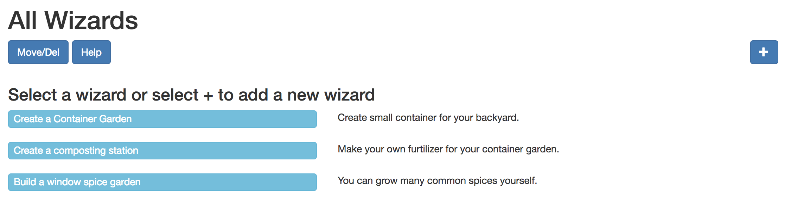
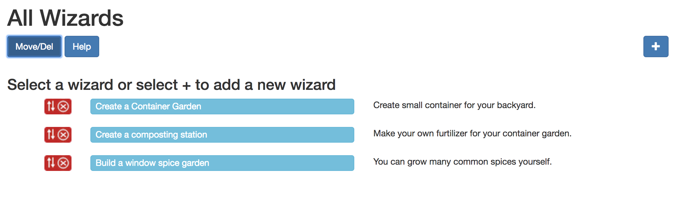
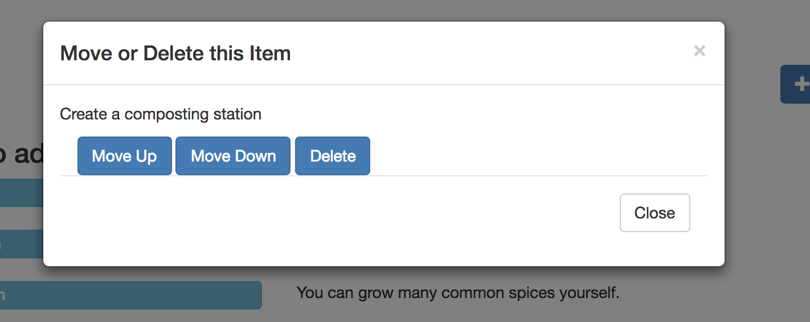

This is the starting point for the WizardMaker application. It shows a list of existing wizards in long light blue buttons. To edit one just select it. To make a new wizard, select the + icon in the upper right corner. This will take you to the Settings page where you can create a title for the wizard. From there you will be adding steps.
To change the order of the wizards select the large blue Move/Delete button. This will reveal a small red move/delete icon button to the left of each wizard.
When you select one of these red icon buttons you will see a pop-up window with three options You can move the wizard up or down or delete it.
